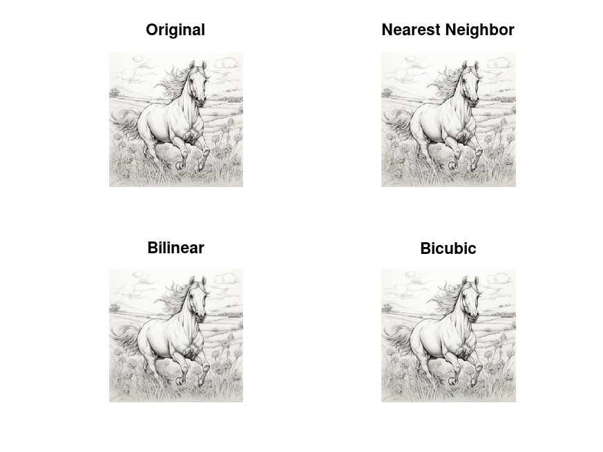

################################################################################ #Bioengineering.DIP.Spring2024.BY: Dr.Saleh Hussein. #Author: Taha Mahmoud.210100552. #Email: dr.taha.libya@gmail.com. #Date: 25.05.2024 # code written in GNU Octave version 7.3.0 with package image ( for DIP). ################################################################################ #Assignment 1, Problem 1 # functions [ imread, imshow, imwrite] included in the code. # image is upscaled by 4X,with different interpolation methods: # [nearest_neighbor, bilinear, bicubic ] ################################################################################ clc, clear all, close all pkg load image % to load DIP package of GNU Octave img = imread('sm_horse.jpg'); %scaling factor x = 4.0 nearest_img = imresize(img,x,'nearest');%nearest neighbor interpolation bilinear_img = imresize(img,x, 'bilinear'); %bilinear interpolation bicubic_img = imresize(img,x, 'bicubic'); %bicubic interpolation % Save the images imwrite(nearest_img, 'nearest_neighbor.jpg'); imwrite(bilinear_img, 'bilinear.jpg'); imwrite(bicubic_img, 'bicubic.jpg'); % Display the images figure; subplot(2,2,1), imshow(img), title('Original'); subplot(2,2,2), imshow(nearest_img), title('Nearest Neighbor'); subplot(2,2,3), imshow(bilinear_img), title('Bilinear'); subplot(2,2,4), imshow(bicubic_img), title('Bicubic');
x = 4